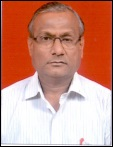

Mechanical Department

Vision:
To stand as the leader in Mechanical engineering to develop technocrats for industrial and social need.
Mission:
1. To impart best quality education to enhance technical and social skills.
1.
2. To develop alliance with the educational institutes, industry and alumni for excellence in engineering education.
3. To provide collaborative environment that stimulate faculty, staff and students with the opportunity to create, analyze and disseminate knowledge.
Program Educational Objectives (PEO):
PEO 1 Apply required skills of mechanical engineering in solving problems of varying complexities.
PEO 2 Pursuing higher studies in the field of mechanical Engineering and its allied branches.
PEO 3 To adapt state of art Mechanical engineering broad based technologies to work in the multidisciplinary work environment.
About Department:
Young, qualified and enthusiastic Staff.
Well Equipped Laboratory.
Advanced Solid Modeling Software packages in CAD Lab.
rainer Kits for each practical.
NC Lathe and Mill Machines for students practice and job production.
Teaching with modern aids like LCD projectors and audio visual means.
Promoting students to take industry based Sponsored projects
Motivating students under MESA
Developing practical skills by Industrial training programme, workshop and Industrial visits.
Prof. V. S. Kalmani
HOD, Mechanical Engineering,
K. K. Wagh Polytechnic, Nashik-3
Home